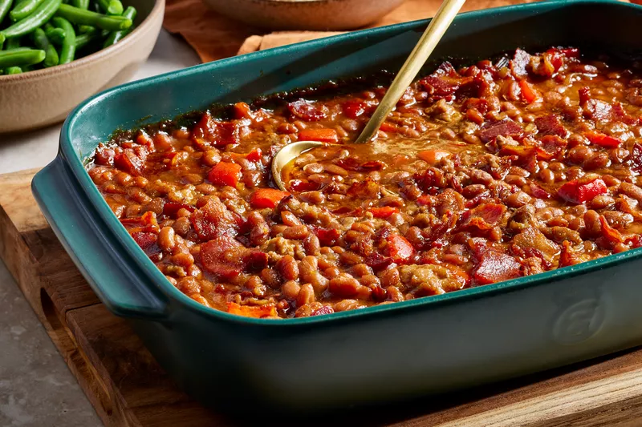

Lasagna Receipe
Home

The assembled lasagna should take about 50 minutes to cook in an oven preheated to 375 degrees F. Cover it with foil for the first 25 minutes, then let it cook uncovered for the final 25 minutes. Also, it's important to let the lasagna rest at room temperature for about 15 minutes before you cut into it.
Ingredients
- 1 pound ground beef
- 1 medium onion, chopped
- 2 cloves garlic, minced
- 1 (16 ounce) can crushed tomatoes
- 1/2 cup diced tomatoes
- 1/4 cup grated Parmesan cheese
- 1/4 cup grated mozzarella cheese
- 1 (16 ounce) can crushed tomatoes
- 1/2 cup grated Parmesan cheese
- 1/4 cup grated mozzarella cheese
- 1 (16 ounce) can crushed tomatoes
Instructions
- Make the meat sauce.
- Cook the noodles.
- Make the ricotta mixture.
- Layer the lasagna according to the recipe instructions.
- Cover with foil and bake.
- Let the lasagna rest before serving.